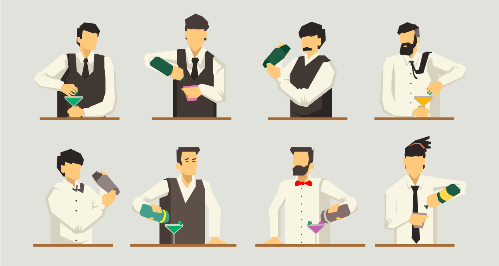
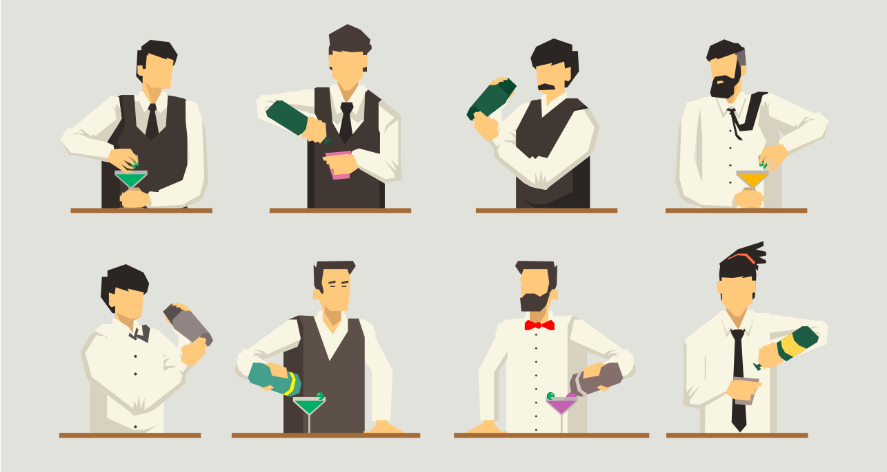
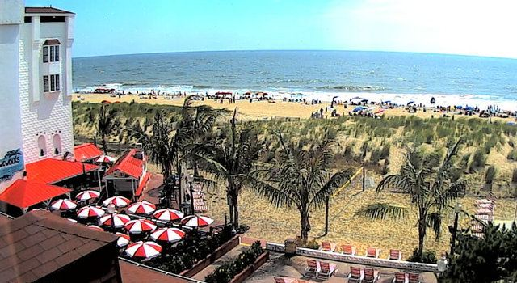
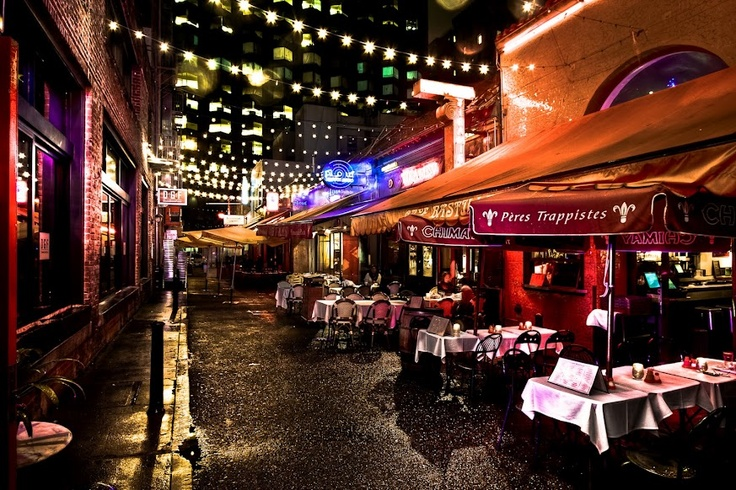
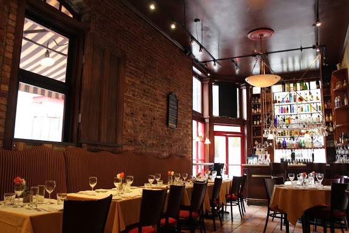
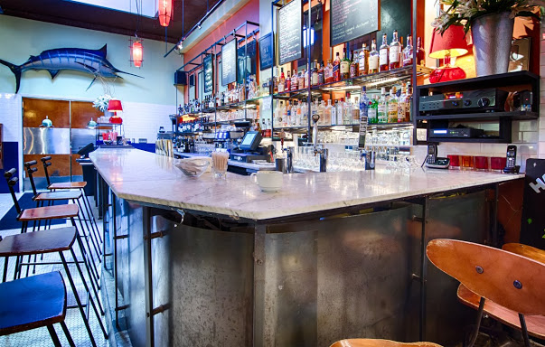
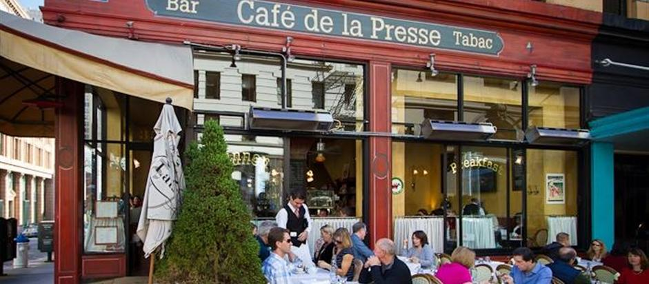
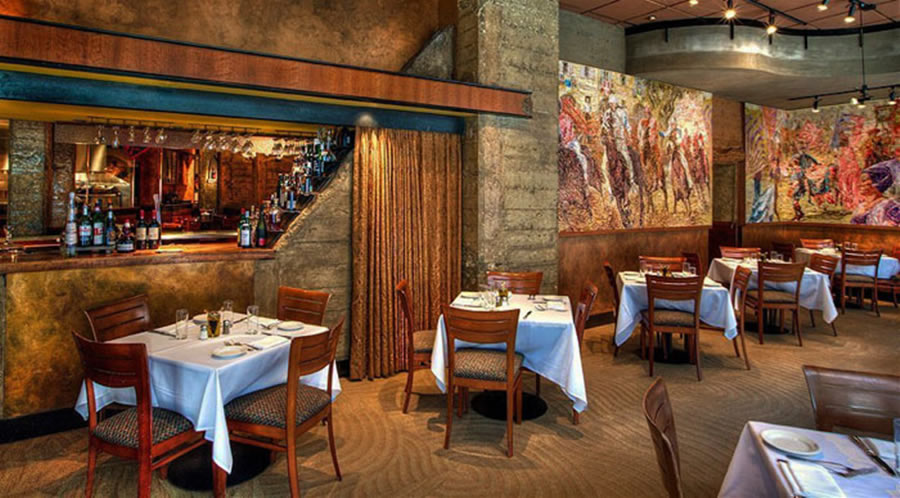
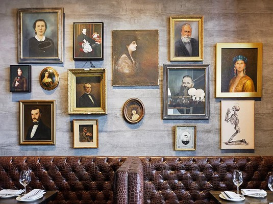
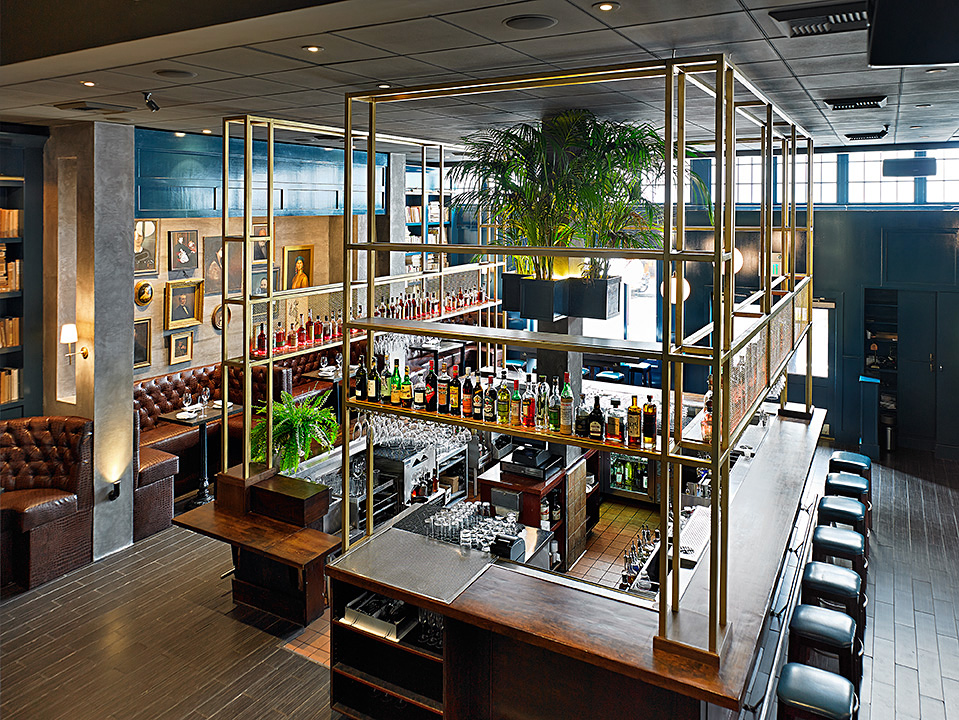

< resume on a map >
Scherban Von Holzer. Bartender.

Scherban Von Holzer. Bartender.
It all started at the beach
May 2012 was a memorable summer. I spent 6 months in Ocean City, MD where I was a barback at Coconuts Beach Bar & Grill . With service on the beach and a crazy Happy Hour, this bar handled a high volume of customers. As the guy in back, hence 'the barback', my job was to restock ice, liquor and produce, open / close the bar, and mainly get stuff the bartenders required. It took a lot of work to keep this place runnning, but we we're having fun doing it.
Belden Place
I started my bartending career in San Francisco. Belden Lane is a charming alley at the bottom of some skyscrapes in Financial District, home to numerous european cuisine restaurants. During a period of 2 years I worked at most of them.
From the italians, Brindisi Cucina di Mare and Cafe Tiramisu to the french, at Plouf, it was here that I learned the basics of the restaurant bussines and indulged in seafood.
Thank you to all the owners from 'the alley' that gave me a chance and shared their knowledge, maybe not always in the most religious way but, that's the industry, very little saints.
Bubbles in Union Square
This pairisan-style café, bar and diner was my home for one year. During my time at Café de la Presse I learned a lot about french wines, the 'terroirs', how to be fast in the craft while providing great service and quality drinks.
Conversations with a sommelier
Palio D'Asti is tuscan-inspired restaurant where I had the pleasure to work with a sommelier and attend weekly wine tastings to learn about wine structure and food pairings.
Introduction to mixology
I'm currently behind the bar at The Dorian, a fun-tastic venue.
Bartending here is awsome.
CV
Skills
- Experienced with all POS systems.
- Confident with cash handling and credit card transactions.
- Professional and courteous in fast-paced establishments.
- Well versed with assisting guests in making menu choices.
- Thorough knowledge of food, spirits and beer.
- Fast at mixing a variety of cocktails using jiggers, and different techuniques like building, stirring and shaking.
- Developed multi-tasking abilities to serve drinks, finalize checks, take orders and deliver food.
- Ablity to operate an espresso machine and customize coffee based delights.
- Responsible at managing the inventory.
- Familiar with register closing reports and other restaurant procedures.
Languages
- Romanian, native
- English, fluent
- Spanish, German conversational
Achievements
- Contributor, OpenStreetMap, Remote
- Web Developer, Freelance, Remote
- GIS Specialist, UC Davis Extensions, California
- Civil Engineer, Technical University of Cluj-Napoca
Hobbies
- Music | Books
- Fitness | Calisthenics | Handbalancing | Yoga
- Snowboarding | Hiking | Nature
Contact
- scherbanvonholzer@protonmail.ch
 THE END
THE END